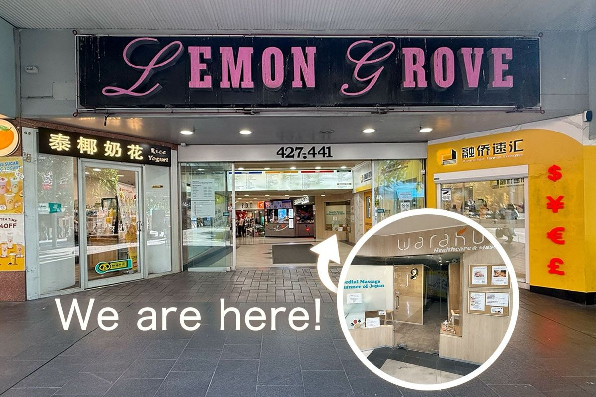
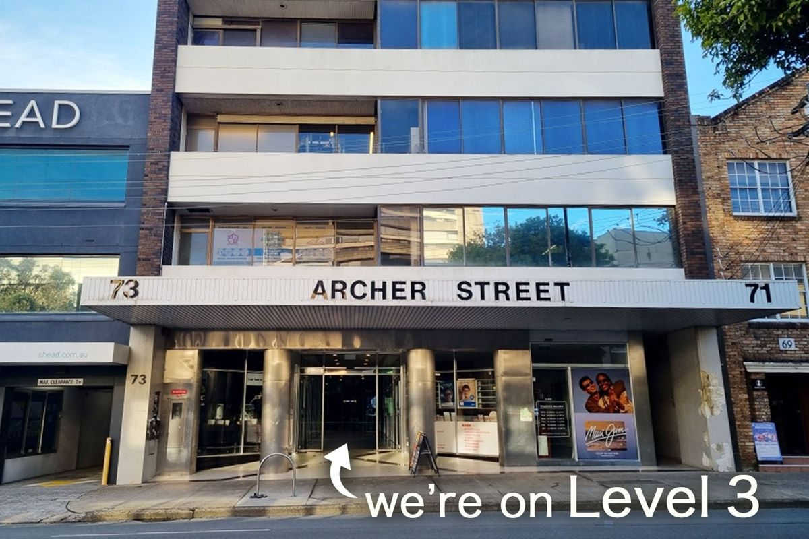

3min walk
Lemon Grove room
Shop 5 Lemon Grove Shopping Centre, 427-441 Victoria Avenue, Chatswood NSW 2067

A design proposal for WARAKU Healthcare & Massage (not the official website)
Chatswood · since 2004
At WARAKU, we bring the art of Japanese healing to Chatswood, offering Remedial Massage, Facial Dry Needling, Acupuncture and Shiatsu performed with authentic Japanese technique and care.
Lemon Grove roomRemedial massage · Facial dry needling
Archer Street roomAcupuncture · Shiatsu
From the weekly roster on the current booking page. Names in brackets are shown in brackets there.
Two rooms
Chatswood station
3min walk
Shop 5 Lemon Grove Shopping Centre, 427-441 Victoria Avenue, Chatswood NSW 2067

6min walk
Suite 307 / Lot 46, 71-73 Archer Street, Chatswood NSW 2067

Our therapists
All therapists are qualified and most are registered with professional associations. They are also registered with most private health funds.
Good to know
Booking request
Choose below and your request is written for you. Then send it by text, or call.